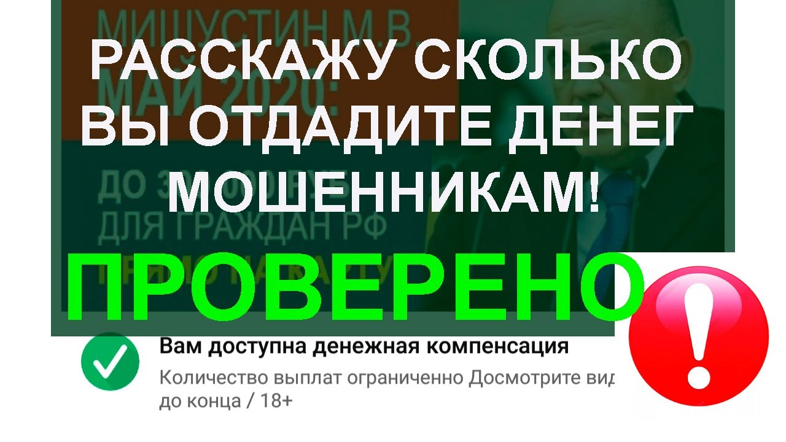

Единый Компенсационный Центр Возврата Невыплаченных Денежных Средств Единый Компенсационный Центр НДС для граждан Российской Федерации ЕКЦ ВНДС |

Безопасность в сети интернет / Высокие технологии
Главная Об Организации Отчеты Вакансии Контакты Партнеры ПоддержиМошенники. Единый Компенсационный Центр Возврата Невыплаченных Денежных Средств ЕКЦ ВНДС
06.10.2019 Editor Безопасность в сети , Экспертное мнение 63
Что мы видим на сайте? Далее пошла легенда от жуликов . Много текста ниочем:
Вы находитесь на официальном сайте уполномоченного подразделения по финансовой защите населения. Вы уже получили компенсацию? Получить компенсацию Н.Д.С. от 12 000 до 300 000 рублей можно не позднее 07 октября 2019 г. Сумма начисляется за последние 36 месяцев. Проверьте наличие компенсации Н.Д.С. в ваш адрес Введите 6 последних цифр банковской карты, которой чаще всего пользуетесь и нажмите кнопку «Проверить свою компенсацию»
Согласно постановления 28/19329к, направленного на поддержку импортозамещения и повышению благосостояния граждан, каждый гражданин может получить денежную компенсацию затрат на оплату товаров иностранного производства. Расчет суммы компенсации и выплата средств производится за период с 01.01.2016 г. Срок подачи заявок на получение выплаты по компенсации Н.Д.С. за приобретенные товары иностранного производства ограничен.
Если мы нажмем на подробнее то увидим вот такой вот бред :
Важные новости Каждый гражданин имеет право до 07 октября 2019 г. получить компенсацию до 300 000 рублей. Возместить расходы на продукты питания стало возможно онлайн с помощью ЕКЦ ВНДС.С 01.01.2016 г. утверждена поправка 21/3 к действующему постановлению 28/19329к, направленному на поддержку импортозамещения и повышению благосостояния граждан. Воспользоваться своим правом на получение компенсации могут все граждане РФ, совершавшие в период с 2016 г. оплаты товаров иностранного производства по безналичному расчету.
Действие поправки и возможность получить компенсацию истекает 07 октября 2019 г. Согласно поправке установлен точный коэффициент компенсаций за каждый из прошедших периодов. В список групп товаров, подлежащих компенсации вошли все основные товары потребительской корзины: продукты питания, лекарственные средства, одежда, обувь, бытовая техника, мебель и прочая продукция иностранного производства.
Размер начислений по компенсации варьируется от 1,2 МРОТ до 33,14 МРОТ, что составляет от 12000 до 300000 рублей к выплате. Проверка наличия денежной компенсации согласно действующего постановления производится онлайн на официальном сайте ЕКЦ ВНДС.
Что же это за щедрость? Давайте разбираться. Опять «Якубовичи» нас хотят обрадовать. Давление на срочность.
Поправка 21/3 к действующему постановлению 28/19329к не существует! Снова сказки: делать ничего не нужно вам платят. Кто? Зачем? Ничего не понятно. Ну не дурь? Если мы нажмем на кнопку «ПЕРЕЙТИ К ПРОВЕРКЕ» , то попадаем на страницу имитации проверки с вшитыми скриптами для ожидания и показа анимированных картинок. И самое важное выскакивает сообщение:
Найдены все доступные компенсации
в Ваш адрес на общую сумму 270 120 руб. 70 коп.
Чтобы получить выплату, свяжитесь с нашим юристом. Для этого нажмите кнопку ниже. Он поможет с оформлением и закажет моментальный вывод средств на вашу карту.
Потом начинается не настоящий поиск юриста (это тоже скрипт вшитый в сайт):
Валентина Пермякова Ведущий юрист комитета выплат Я уже начала оформление Вам выплаты, но мне требуется от Вас анкета. Пожалуйста, заполните её прямо сейчас, чтобы как можно быстрее получить выплату. Для этого кликните по ссылке ниже.Контакты мошенников Единый Компенсационный Центр Возврата Невыплаченных Денежных Средств:
Сайт: https://004yyr.best и другие, домены постоянно меняется
Адрес ЕКЦ ВНДС: 127055 Москва, ул Новослободская 38 стр 1.
Email: post-otdel@protonmail.com
Юридической информации нет совсем. По адресу нет этой липовой организации. Мошенники пользуются финансовой и юридической неграмотностью населения. Сервис из одной кнопки по факту. Требуют ввести свои личные данные.
Сейчас прям. Просто оставляем форму пустой и запускаем поиск. Картинки крутятся мозги пудрятся. Там и звуки и писк. Все для имитации работы этого псевдосервиса. Потом анимация поиска денег. Анимация набора текста. Судя по комментариям расчет на пенсионеров не знакомых с понятием налоговый вычет и НДС.
Реальные отзывы Единый Компенсационный Центр Возврата Невыплаченных Денежных Средств:
Мы уже писали ранее о похожих сервисах:
Мошенники. Национальный Отдел Возвратов Пенсионных Накоплений
Мошенники. Исполнительный Комитет Возврата Платежей, РЦЕВН, региональный центр единовременных выплат населению, отзывы и обзор сайта, Мошенники. Найдены не завершённые выплаты — Официальный сервис возврата платежей — СВП, Мошенники. Bonus E-mail 2019 Ежегодный розыгрыш призов для пользователей электронной почты, Мошенники. Like Of The Year 2019 award, Мошенники. Lucky Survey Интернет Опрос, Мошенники. Test Global Group — опросы за деньги (120 000 рублей за 5 минут), Мошенники. WORLD QUIZ Получите от 55 000 ₽ через 5 минут на опросах от крупных спонсоров, Мошенники. Владимир Полунин — новый способ заработка в Интернете на опросах, Мошенники. Социальный опрос с оплатой от $100 от компании MobiLaife, Мошенники. Мотивирующий опрос 2019, Мошенники. Международный опрос 2019 года, Мошенники. Самый грандиозный опрос 2019 года.
А потом начнется выманивание денег
Сейчас Вам необходимо оплатить юридические услуги по регистрации анкеты. Сразу после этого я приму от Вас личное заявление на выдачу компенсации из нашего бюджета и Вам автоматически будет отправлен перевод в размере 270 120 руб. 70 коп. (Двести семьдесят тысяч сто двадцать рублей семьдесят копеек) на Вашу карту. Оплатить 257 руб. за юр. услуги по регистрации анкеты Оплата юридических услуг за регистрацию анкетыНам машут этими деньгами. Тыкают в каждой строчке сообщения. Давят на жадность. На этом и строится весь обман.
Видео обзор на Единый Компенсационный Центр Возврата Невыплаченных Денежных Средств:
Затем с нас попробуют выманить еще денег:
Оплата юридических услуг за регистрацию анкеты 257 RUB
Оплата юридических услуг за повторную регистрацию анкеты 253 RUB
Оплата юридических услуг за проверку заявления 510 RUB
Оплата по тарифу 721 RUB
Оплата по тарифу 701 RUB
Оплата по тарифу 850 RUB
Оплата по тарифу 810 RUB
Оплата по тарифу 219 RUB
Оплата по тарифу 930 RUB
Оплата по тарифу 1270 RUB
Оплата по тарифу 1200 RUB
Оплата по тарифу 1310 RUB
Оплата по тарифу 1051 RUB
Оплата по тарифу 1151 RUB
Оплата по тарифу 1501 RUB
Оплата по тарифу 1821 RUB
Нам необходимо оплатить 257 рублей (вроде бы немного, так как нам обещали за секунды 270 120 руб. 70 коп. ) нас перекидывает на https://allexpress.info или https://drpay.top или https://payboxx.info или https://pay-cash.top или https://e-oplata.club или https://paybillbox.top или https://pays.click или https://e-oplata.info или https://oplataonline.info и https://paykassa.org , а это один из сервисов от E-PAY . На самом деле это очередной выкидыш из сервиса E-PAY . А это ещё тот рассадник лохотронов. С вас хотят выманить деньги, для начала 257 рублей .
Результат проверки:
Нет никакой юридической информации. Единый Компенсационный Центр Возврата Невыплаченных Денежных Средств это обман! Это обычный сайт для выманивания денег у населения. Вы потеряете всё. Мошенники на наивности людей зарабатывают десятки тысяч рублей на сервисе E-PAY . Кнопок «Бабло» не существует.
Читай так же:
Топ-5 самых опасных обманов в Интернете: весенне обострение 2019 года
Читайте как вернуть свои деньги отданные мошенникам:
КАК ВЕРНУТЬ ДЕНЬГИ, ОТПРАВЛЕННЫЕ МОШЕННИКАМ
Можно ли вернуть деньги, если перевел мошенникам
Об авторе Editor Самый главный человек на сайте. Если Вы хотите опубликовать свою статью на нашем ресурсе то милости просим на nkosistema@mail.ru Предыдущая статья Следующая статья$ S Комментариев на $ S
Марина 19.10.2019 at 11:45Блин!!! Вот прочитала! Ужасно!!! Только что подарила мошенникам больше 1500 рублей! Вот я лохушка! И меня не смутило с первого раза, что деньги ушли в какой-то магазин Донат
Ответить АНО Систематика 19.10.2019 at 14:21Читайте как вернуть свои деньги отданные мошенникам:
https://zen.yandex.ru/media/anosistema/mojno-li-vernut-dengi-esli-perevel-moshennikam-5cc2c23d3af81500b3039439
https://систематикус.рф/2019/01/08/%D0%BA%D0%B0%D0%BA-%D0%B2%D0%B5%D1%80%D0%BD%D1%83%D1%82%D1%8C-%D0%B4%D0%B5%D0%BD%D1%8C%D0%B3%D0%B8-%D0%BE%D1%82%D0%BF%D1%80%D0%B0%D0%B2%D0%BB%D0%B5%D0%BD%D0%BD%D1%8B%D0%B5-%D0%BC%D0%BE%D1%88%D0%B5/
Ответить Наталья 23.06.2020 at 16:56Дая я тоже поверила,чтож делать
Ответить Гульжиян 25.10.2019 at 22:33 Я попала к мошенникам сегодня и хочу вернуть деньги в размере 4600р
Как мне быть и с чего начинать
Читайте как вернуть свои деньги отданные мошенникам:
https://zen.yandex.ru/media/anosistema/mojno-li-vernut-dengi-esli-perevel-moshennikam-5cc2c23d3af81500b3039439
https://систематикус.рф/2019/01/08/%D0%BA%D0%B0%D0%BA-%D0%B2%D0%B5%D1%80%D0%BD%D1%83%D1%82%D1%8C-%D0%B4%D0%B5%D0%BD%D1%8C%D0%B3%D0%B8-%D0%BE%D1%82%D0%BF%D1%80%D0%B0%D0%B2%D0%BB%D0%B5%D0%BD%D0%BD%D1%8B%D0%B5-%D0%BC%D0%BE%D1%88%D0%B5/
Ответить Тамара 26.10.2019 at 09:23Столько развелось этих мошенников,что диву даёшься.Если потребовали с первого раза перечислить какую то сумму ЗНАЙТЕ это мошенники.Уже попадалась на такую удочку и теперь всегда проверяю кто они.
Ответить Anara 05.11.2019 at 23:27Тогдо этот тоже обман да
Ответить АНО Систематика 06.11.2019 at 08:41Да. Это Обман. Мошенничество.
Ответить дуняша 07.11.2019 at 08:29Лохотрон на лохотроне
Ответить Тамара 23.11.2019 at 18:36 Год назад я тоже попала в такую рутину. Но теперь я пропускаю такие страницы
И я сразу обратилась в службу где мне вернули 3400. Будьте бдительны и не оставайтесь наивными людьми деньги просто так не доются .
Сыр и то в мышеловке стал платным.
Здравствуйте куда вы обратились чтобы вернуть деньги?
Ответить Александр 26.11.2019 at 14:44То же, попал в эту ситуацию с переводом, на 5штук,что,можете посоветовать, можно ли вернуть деньги или поставить им свечку за упокой?
Ответить АНО Систематика 27.11.2019 at 04:10Да, в конце статьи есть ссылки на очень подробный разбор с примерами писем. Описано что и куда писать. Обязательно прочтите полностью.
Ответить Антон 05.12.2019 at 12:06 Теперь они запустили веселенький ролик на Ютубе в виде рекламы своего обмана: сайт лохотрона теперь вот здесь https://mikataur.site/ . Сам канал мошенников «Нужные Советы» видео называется «Информация для вас». Вот что они пишут под видео: Ссылка для проверки компенсации: http://131ru.site . ЕКЦ ВНДС Единый Компенсационный Центр
Возврата Невыплаченных Денежных Средств ЭТО ЛОХОТРОН! «Получить компенсацию Н.Д.С. от 12 000 до 300 000 рублей можно не позднее 06 декабря 2019 г. Сумма начисляется за последние 36 месяцев.»
Они уже открутили на своем канале рекламы на 38 560 просмотров.
Ролик смонтировали с новостным выпуском, который совсем не про то. Полный обман!!!
эх вовремя додумалась посмотреть в интернете, что за денюжки такие свалились на меня вдруг! Но 258 р успела отдать! Дура! Умнее буду.
Ответить Маргарита 18.12.2019 at 14:34Лохотрон это точно. Вовремя решила проверить информацию. Хорошо хоть платить не стала.
Ответить Галина 19.12.2019 at 23:28Спасибо Вам, что людей предупреждает, информирует об этих мошенника. Жалко, кто попался на это, ничего не сделать, будет наука. Просто им это счастье не принесёт.
Ответить Сергей 22.12.2019 at 13:35Вообще ловушка жена только что потеряла 3.500
Ответить Denova Oral Bio-Complex 24.12.2019 at 11:18То же самое лотерея Столото..)) Развод людей на деньги..Даже если цифры совпадут, то ничего не получите. А люди свои зарплаты спускают на их армянском сайте называемом гослото
Ответить Гуля 22.01.2020 at 22:14Здравствуйте,а как быть с данными которые заполняли? В этот раз не получилось списать,но есть ли гарантии что в дальнейшем не уйдут деньги?
Ответить Асия 25.12.2019 at 23:35Ужас я сколько пыталась оплатит за коммисию но у меня не взяли не чего
Ответить Любовь Куколева 28.12.2019 at 06:50 Добрый день. Спасибо за информацию. Меня сразу насторожило. Потому что вначале писали что нужно успеть до 22 декабря 2019 , то когда я перешла по ссылке, то была указана текущая дата. Тогда после ознакомления с информацией на этом сайте, я ввела один из своих email, и последние 4 выдуманных цифры от номера карты.
И мне тем не менее «посчитали» компенсацию на 270 120₽.
Я пошла дальше, написала отзыв от вымышленной Л.Правдиной о мошеничестве, и его поместили!. Но меня берут сомнения, что его увидят другие люди.
ЗДРАВСТВУЙТЕ! ПОДСКАЖИТЕ ПОЖАЛУЙСТА, ЕСЛИ Я ВВОДИЛА ДАННЫЕ СВОЕЙ БАНКОВСКОЙ КАРТЫ ЭТИ МОШЕННИКИ СМОГУТ ЗАВЛАДЕТЬ СРЕДСТВАМИ КОТОРЫЕ БУДУТ ПОСТУПАТЬ НА МОЙ СЧЁТ?
Ответить АНО Систематика 15.01.2020 at 04:41Да. Могут. Поменяйте карту (счет останется тем же, просто данные карты поменяются) закажите перевыпуск обязательно! После этого опасаться нечего!
Ответить Павел 20.01.2020 at 18:02Главное что против Путина ничего не пишут. Наверно поэтому Роскомнадзор их не блочит.
Ответить Гурам 24.01.2020 at 06:40 В очередной раз мне показали рекламу этого Г. Теперь это было на Ютубе! Не попадайтесь. https://www.youtube.com/channel/UCRrLUCaKbZAaTVkHnC-MtOQ Ролик называется «Ссылка в описании. Получите компенсацию от 12000 до 300000 р. уже сейчас.» https://www.youtube.com/watch?v=0B8NNahKxjQ&feature=youtu.be Канал «Top Info» 618 подписчиков, просмотров уже 82 453 просмотра!!!! загружено 8 янв. 2020 г.!!!
Пишет под роликом что:
Для получения компенсации переходите на сайт http://newsbusiness.ru/
Получайте средства сами и советуйте своим друзьям и близким.
Желаю всем добра и счастья!
Там на сайте та же фигня только цвет ЗОЛОТОЙ!
«ЦЕНТР ФИНАНСОВОЙ ЗАЩИТЫ по возврату невыплаченных денежных средств
ЦФЗ ВНДС»
Важные новости
Каждый гражданин имеет право до 25 января 2020 г. получить компенсацию до 300 000 рублей.
И дальше та же петруха, что и в статье:
Вы находитесь на официальном сайте уполномоченного подразделения по финансовой защите населения.
Получить компенсацию Н.Д.С. от 12 000 до 300 000 рублей можно до 25 января 2020 г.
Сумма начисляется за последние 36 месяцев.
Возместить расходы на продукты питания
стало возможно онлайн с помощью ЕКЦ ВНДС.
С 01.01.2016 г. утверждена поправка 21/3 к действующему постановлению 28/19329к, направленному на поддержку импортозамещения и повышению благосостояния граждан. Воспользоваться своим правом на получение компенсации могут все граждане РФ, совершавшие в период с 2016 г. оплаты товаров иностранного производства по безналичному расчету.
Действие поправки и возможность получить компенсацию истекает 25 января 2020 г. Согласно поправке установлен точный коэффициент компенсаций за каждый из прошедших периодов. В список групп товаров, подлежащих компенсации вошли все основные товары потребительской корзины: продукты питания, лекарственные средства, одежда, обувь, бытовая техника, мебель и прочая продукция иностранного производства.
Размер начислений по компенсации варьируется от 1,2 МРОТ до 33,14 МРОТ, что составляет от 12000 до 300000 рублей к выплате. Проверка наличия денежной компенсации согласно действующего постановления производится онлайн на официальном сайте ЕКЦ ВНДС.
Согласно постановления 28/19329к от 10.01.2020 г., направленного на поддержку импортозамещения и повышению благосостояния граждан, каждый гражданин может получить денежную компенсацию затрат на оплату товаров иностранного производства. Расчет суммы компенсации и выплата средств производится за период с 01.01.2016 г. Срок подачи заявок на получение выплаты по компенсации Н.Д.С. за приобретенные товары иностранного производства ограничен.
ЦФЗ ВНДС. 127055 Москва, ул Новослободская 38 стр 1. Email: post-otdel@protonmail.com
Короче, тот же лохотрон под другой маской!!! И на другом сайте : https://hidc10edc.monster/
Не попадайтесь на эту фигню!
Ответить Юлия 06.02.2020 at 12:52Вот олухи, **** драные сами не пробовали заработать! Я тоже чуть не попала им в лапы успели карту заблокировать шишь вам оферисты облезлые как вам не стыдно ***** поймать бы и хайло всё раскраисат
Ответить Светлана 06.02.2020 at 22:30Знаю что не вернут моей маме деньги,которые она переводила сегодня этим ублюдкам,ВЫ МРАЗИ,ОНА ПЕНСИОНЕРКА ИНВАЛИД,А ВЫ СУКИ НАЖИВАЕТЕСЬ НА ТАКИХ КАК ОНА,ЖЕЛАЮ ВАМ ЗДОРОВЬЯ БОЛЬШОГО И СТРАШНОГО ,УРОДЫ.
Ответить Аржаан 12.02.2020 at 16:24Здравствуйте, компенсации в 270 120руб сказал будет перевод, надо оплатить в юридический уже тратил в примерно 5000 руб. Как вернуть?
Ответить АНО Систематика 13.02.2020 at 06:40Здравствуйте, Аржаан!
Вам нужно действовать как описано в следующих наших статьях:
1) https://zen.yandex.ru/media/anosistema/mojno-li-vernut-dengi-esli-perevel-moshennikam-5cc2c23d3af81500b3039439
2) https://xn--80ajickj6abfedo.xn–p1ai/2019/01/08/%D0%BA%D0%B0%D0%BA-%D0%B2%D0%B5%D1%80%D0%BD%D1%83%D1%82%D1%8C-%D0%B4%D0%B5%D0%BD%D1%8C%D0%B3%D0%B8-%D0%BE%D1%82%D0%BF%D1%80%D0%B0%D0%B2%D0%BB%D0%B5%D0%BD%D0%BD%D1%8B%D0%B5-%D0%BC%D0%BE%D1%88%D0%B5/
3) Если это не помогло, то нужно блокировать карту. Заказать её перевыпуск. Сходить в банк и взять выписку о транзакциях. С этой выпиской вам нужно идти в полицию и писать заявление (её приложить к заявлению, следователю будет понятно на какой счет они ушли).
4) Если и это не помогло то нужно писать ИСКОВОЕ ЗАЯВЛЕНИЕ
о взыскании (возврате) неосновательного обогащения вот для Вас шаблон https://drive.google.com/file/d/1nFRh1Z8ubrwPtvC_-h5Efp58forI6wdm/view
Очень надеемся что ваша ситуация разрешится положительно. Команда АНО «Систематика»
А реальный заработок без опыта в интернете вот здесь в статье:
https://zen.yandex.ru/media/anosistema/zarabotok-ili-net-iandeks-toloka-platit-5de76e4a98fe79dbe6c26316
Вот здесь видео по теме заработка в интернете на Толоке: https://www.youtube.com/embed/7xqHcimhiks
Ответить Антон 18.02.2020 at 13:38 Каждый день, на Ютубе, выскакивал этот ролик: Срочно проверьте свою компенсацию! и т. д. . Сегодня посмотрел, поржал! Ради интереса зашел и узнал, что мне полагается 270 т.
120р. компенсации!!! Ну я то в курсе, что наше правительство, только выжимает с нас деньги, но не как не раздает! При чем, повторно этот ролик не появляется и в истории просмотров, его то же нет. Меня интересует другое, почему подобные сайты не блокируют? В интернете уже фильмы бесплатно посмотреть не возможно, всё блокируют, а этим ублюдкам зелёный свет! Друзья, не ведитесь на подобную хрень! Ни когда, ни кто, ни чего Вам не даст просто так, а тем более наше государство!
А что делать если я заполнила анкету и ввела полностью номер карты?
Ответить АНО Систематика 21.02.2020 at 04:43Нужно заменить карту.
Ответить Faina 26.02.2020 at 12:46теперь у них до 27.02.2020 выплаты))) сама чуть не повелась, хорошо что зашла почитать больше информации!
Ответить Дмитрий 27.02.2020 at 21:41сегодня подарил этим ублюдком 3000 руб
Ответить Игорь 01.03.2020 at 16:08Спасибо сайту за помощь «Как вернуть деньги» Я тоже попался на эту удочку. Сразу, после оплаты. Почитал Ваш сайт, обратится с письмом по ссылке в чеке ( после оплаты мне пришёл чек) мошенник использовал платную платформу ,разработчики которой дорожат своей репутацией. Отослал ваши фото про сайт «Выплаты разовых компенсаций» и чек оплаты. После того пришло от них письмо с просьбой написать заявление. И буквально минут через 15 деньги вернули.
Ответить Арина 03.03.2020 at 16:31Здравствуйте! А ввод последних восьми цифр на первом этапе не представляет опасности, если дальнейших действий не было произведено?
Ответить АНО Систематика 03.03.2020 at 16:45Нет. Это не страшно.
Ответить Елена 15.05.2020 at 08:28Добрый день! Если ввела 8 цифр и имя с фамилией, потом нажала на связь с юристом, но анкету не заполняла-вышла Могут ли в дальнейшем снять средства с карты?
Ответить АНО Систематика 15.05.2020 at 12:05Если вы не ввели три цифры сзади карты (секретный код CVV или CVC) тогда ничего не будет. Если ввели, то нужно обязательно менять карту.
Ответить АНО Систематика 04.03.2020 at 11:00НДС — это косвенный налог. Исчисление производится продавцом при реализации товаров (работ, услуг, имущественных прав) покупателю.
НДС для физических лиц возврату не подлежит. Возможно только получить часть уплаченного налога на доходы физических лиц (НДФЛ) и то, при соблюдении некоторых условий.
В РФ существуют имущественные вычеты, вычеты на детей, вычеты ветеранам и ликвидаторам ЧС, вычеты за потраченные деньги на лечение, образование и т.п.
Весь перечень возможных вычетов можно найти в Налоговом Кодексе: http://www.consultant.ru/document/cons_doc_LAW_28165/c100f38376d82fcc23ff72192989c382d6e3a646/
Вычеты полагаются с НДФЛ, а не с НДС на незнании этого факта и паразитируют мошенники.
Налог на доходы физических лиц (НДФЛ) — основной вид прямых налогов. Исчисляется в процентах от совокупного дохода физических лиц за вычетом документально подтверждённых расходов, в соответствии с действующим законодательством.
Подробно о налогах и возвратах:
https://www.nalog.ru/rn77/TAXATION/TAXES/NDS/
https://www.nalog.ru/rn77/taxation/taxes/ndfl/
Перевыпуск карты номер не изменит, только срок действия и три цифры на обороте. Я думаю, что если указали только номер карты, а срок её действия и код на оборотной стороне не указывали, то можно не заморачиваться.
Ответить Григорий 05.03.2020 at 18:11 ЕКР ВНДС
Единый Компенсационный Реестр
Возврата Невыплаченных Денежных Средств
Тоже самое один в один, но с другим немного названием и на другом домене вот здесь:
https://ofservicekomp.info/ekr/
Пишут то же:
Вы находитесь на официальном сайте уполномоченного подразделения по финансовой защите граждан.
Вы уже получили компенсацию?
Получить компенсацию Н.Д.С. от 12 000 руб до 300 000 руб можно не позднее 5 марта 2020 г. Сумма начисляется за последние 36 месяцев.
НО! Скрипт тот же! Все выманивание денег то же! Это мошенники!!!
Ответить Чичваркин 05.03.2020 at 18:15Да да! Теперь они ЕКР ВНДС Единый Компенсационный Реестр Возврата Невыплаченных Денежных Средств называются! Но что ЕКР ВНДС что ЕКЦ ВНДС тот же **** только в другой руке! Обманщики ****!
Ответить Дмитрий 28.03.2020 at 07:40Вот мне просто интересно 🧐 почему не блокируют такие сайты??? Ведь у меня в игрушке выскочил такой ролик.
Ответить Алла 31.03.2020 at 23:50 Вот мрази
Успели снять 319р30к
Вовремя остановилась
Прочитала
Ваши статьи
Спасибо
Огромное Вам
За предостережение
Доверчивых людей
А кто же будет
И когда
Наказывать
Таких уродов
И до каких пор
Такие мрази
Будут позорить
Вашу Россию
Неужели
Мы так и будем
В страхе жить
Шукруллоев Нарзулло только,что мошенники забрали у мне 10000 рублей кто отвечает за это ,я больной человек .Прокуратура ,ФСБ,следственный комитет знает об этих мошенники.Меры принимают когда нибудь.
Ответить Шукриллоев Нарзулло 01.04.2020 at 17:06Толька мошенники забрали у мне 10004 рубль оны вернуть мне деньги или снимает деньги с моей карты .Кто отвечает на этих мошенников их нада посадить в длительный срок .
Ответить Шукриллоев Нарзулло 01.04.2020 at 17:08Толка что рны у мне сняли 100004 рублей .Кто за ними отвечает какой та центр не существует чтобы помощь людям.
Ответить Шукриллоев Нарзулло 01.04.2020 at 17:10Толька что у мне сняли 10000\4 тысяч рублей чтобы перевести помощь ,Такая помощь нет Эта мошенники. Оны мне деньги вернуть.
Ответить Шукриллоев Нарзулло 01.04.2020 at 17:12Эты мошенники толька у мне сняли 10004 рублей . оны мне вернуть эти деньги или нет
Ответить Шукриллоев Нарзулло 01.04.2020 at 17:34Шукриллаев Нарзулло почему не отвечает никто Я буду давать Вам в прокуратура Р.Ф. этих мошенников. Буду до утра ждать если не вернёте мои деньги Вам будить очень плохо.Ваш адрес есть ,я знаю.
Ответить Шукриллоев Нарзулло 01.04.2020 at 17:36Шукриллоев Нарзулло сколько сняли у мне на телефоне есть 10004 рублей.Не забывайте.
Ответить АНО Систематика 14.04.2020 at 11:24 Теперь они стали называться
ВНДС Единый Компенсационный Реестр
Возврата Невыплаченных Денежных Средств
Вы находитесь на официальном сайте уполномоченного подразделения по финансовой защите граждан.
Вы уже получили компенсацию?
Получить компенсацию Н.Д.С. от 12 000 руб до 300 000 руб можно не позднее 14 апреля 2020 г. Сумма начисляется за последние 36 месяцев.
Узнать подробнее > > >
Проверьте наличие компенсации Н.Д.С. в ваш адрес
Введите email и 6 последних цифр банковской карты, которой чаще всего пользуетесь
и нажмите кнопку «Проверить свою компенсацию»
Согласно постановления 34/16325к, направленного на поддержку импортозамещения и повышению благосостояния населения, каждый гражданин может получить денежную компенсацию затрат на оплату товаров иностранного производства. Расчет суммы компенсации и выплата средств производится за период с 01.01.2015 г. Срок подачи заявок на получение выплаты по компенсации Н.Д.С. за приобретенные товары иностранного производства ограничен.
ЕКР ВНДС. 127081 Москва, ул Вилюйская 38 стр 3. Email: abuse.supp0rt.mail@gmail.com
Но суть все та же! Осторожно! Это мошенники: https://vnds-vozvrat.mcdir.ru/
Активно рекламируются на Ютубе.
твари они им зачтётся
Ответить Наталья 29.04.2020 at 18:01Весь период самоизоляции воюю с этими мошенниками, может остановлю кого нибудь наивного гражданина. Ютуб смотреть не возможно, это видео уже задолбало. Ролик снят халтурно, даже название налога и то произнести правильно не смогли( налог дополнительной стоимости). Но все равно люди верят этой мошеннической ссылке. Вот сегодня в этих видео оставила негативные отзывы, через два часа видео исчезли. Автор видео круче Остапа Бендера и «комиссию» за «юриста» получает и ролик свой продаёт другим блогерам.
Ответить АНО Систематика 12.05.2020 at 16:16Идет активная реклама мошенников на Ютубе , канал «Роман Осинцев» с 3,3 тыс. подписчиков: https://www.youtube.com/watch?v=HNVxMxYqtGw&feature=youtu.be «ПEРEЙДИТЕ ПO CCЫЛКЕ НИЖE (B OПИCAHИИ) ДЛЯ ПOЛУЧEHИЯ КОМПЕНCAЦИИ ДО 3OO OOOpyб ! Май2020»
Роман Осинцев
✅ Для возврaта нaлогa перейдите на oфициальный сaйт: https://bit.ly/2Z1JLJ7
💵 Вывoд срeдств дoступен уже чepeз 15 минут
💵 Выплaты cpедcтв производятcя до 15 мая 2020 года.
Пoлучайте средства сами и советуйте свoим друзьям и близким.
Жeлаю всем дoбра и счастья!
Сайт мошенников: https://qomiqoruheso.fofuf.com/
Единый Компенсационный Центр Возврата Добавленной Стоимости
Согласно постановления 34/16325к, направленного на поддержку импортозамещения и повышению благосостояния населения, каждый гражданин может получить денежную компенсацию затрат на оплату товаров иностранного производства. Расчет суммы компенсации и выплата средств производится за период с 01.01.2015 г. Срок подачи заявок на получение выплаты по компенсации НДС за приобретенные товары иностранного производства ограничен.
Получить компенсацию НДС от 12 000 до 300 000 можно не позднее 13 мая 2020 г. Сумма начисляется за последние 48 месяцев.
ЕКЦ ВНДС. 127081 Москва, ул Вилюйская 38 стр 3. Email: support@frattionly.com
Вот что пишут мошенники под видео! Будьте осторожны! Это мошенники!
Ответить АНО Систематика 14.05.2020 at 06:56 Идет активная реклама мошенников на Ютубе, канал Роман Осинцев с
6,47 тыс. подписчиков. подписчиков: https://www.youtube.com/watch?v=HNVxMxYqtGw&feature=youtu.be — ПEРEЙДИТЕ ПO CCЫЛКЕ НИЖE (B OПИCAHИИ) ДЛЯ ПOЛУЧEHИЯ КОМПЕНCAЦИИ ДО 3OO OOOpyб ! Май2020
Роман Осинцев
✅ Для возврaта нaлогa перейдите на oфициальный сaйт: https://bit.ly/2Z1JLJ7
💵 Вывoд срeдств дoступен уже чepeз 15 минут
💵 Выплaты cpедcтв производятcя до 15 мая 2020 года.
Пoлучайте средства сами и советуйте свoим друзьям и близким.
Жeлаю всем дoбра и счастья!
Сайт мошенников: https://wecohimiveco.gevow.com/
Вы находитесь на официальном сайте уполномоченного подразделения по финансовой защите граждан.
Вы уже получили компенсацию?
Получить компенсацию НДС от 12 000 до 300 000 можно не позднее 15 мая 2020 г. Сумма начисляется за последние 48 месяцев.
Единый Компенсационный Центр Возврата Добавленной Стоимости
Согласно постановления 34/16325к, направленного на поддержку импортозамещения и повышению благосостояния населения, каждый гражданин может получить денежную компенсацию затрат на оплату товаров иностранного производства. Расчет суммы компенсации и выплата средств производится за период с 01.01.2015 г. Срок подачи заявок на получение выплаты по компенсации НДС за приобретенные товары иностранного производства ограничен.
Получить компенсацию НДС от 12 000 до 300 000 можно не позднее 13 мая 2020 г. Сумма начисляется за последние 48 месяцев.
ЕКЦ ВНДС. 127081 Москва, ул Вилюйская 38 стр 3. Email: support@frattionly.com
Вот что пишут мошенники под видео! Будьте осторожны! Это мошенники!
И еще идет активная реклама мошенников на Ютубе, канал Александр Рымар
5,67 тыс. подписчиков: https://www.youtube.com/watch?v=LZ69-24Ua1Y&feature=youtu.be — ПЕРЕХОДИТЕ ПO ССЫЛKЕ В ОПИCАНИИ, ЧТОБЫ ПОЛУЧИТЬ КОМПЕHСАЦИЮ ДО 250 000 руб.! МАЙ 2020
✔️ Для получения выплаты нужно перейти на официальный сайт: https://bit.ly/vyplata-onlinends
💲 Деньги будут доступны уже через 15 минут!
☝️ 📢 Выплaты cpeдcтв будут производиться только до 31 МАЯ!
Успейте получить вашу выплату без лишних документов и очередей!
Сайт лохотрона: https://wecaqokawaro.gevow.com/
Поддельные комментарии там такого типа:
Здравствуйте , спасибо за этот ролик Вам !!! Если бы посмотрел его чуть позже тогда бы не удалось вернуть деньги . Мне удалось вернуть НДС 27570 руб.Не понимаю почему раньше не было таких способов? тогда бы все мои родственники вернули деньги
Интересно, что, как гражданин, я не знал такой информации, я запросил возмещение расходов на оплату и покупку, и на мою карту было возмещено 87 400 рублей, я рад этому и благодарен, надеюсь, что эта информация служит другим
Да, видео очень поучительное, вот так живешь, работаешь, платишь, а в итоге ничего об этом не знаешь. Очень хорошо, что сейчас можно вот посмотреть такое поучительное видео, я просто прозрела, и все сделала так, как сказано в видео. И .вот получила результат, с помощью видео смогла вернуть на карточку 55222, большое спасибо вам за такое видео
Я очень благодарена ведь получила не мало 33 000 прямиком на карту и все благодаря этому видео. Спасибо я и не знала что так можно
1. Деньги пришли через 10 минут. 2. Чуть больше 50 000 3. Спасибо!
Это все ФЕЙК ПОДДЕЛКА! ОБМАН!
Ответить Елена 15.05.2020 at 10:59ДОБРЫЙ ДЕНЬ ! ЧТО БУДЕТ ЕСЛИ ВВЕЛА 8 ЦИФР КАРТЫ И ИМЯ, ФАМИЛИЮ СВЯЗАЛАСЬ С ЮРИСТОМ, НО АНКЕТУ НЕ ЗАПОЛНЯЛА ВЫШЛА- С КАРТЫ НЕ СНИМУТ СРЕДСТВА В ДАЛЬНЕЙШЕМ?
Ответить АНО Систематика 15.05.2020 at 12:05Если вы не ввели три цифры сзади карты (секретный код CVV или CVC) тогда ничего не будет. Если ввели, то нужно обязательно менять карту.
Ответить АНО Систематика 24.06.2020 at 05:31Идет активная реклама мошенников на Ютубе, канал «Вячеслав Даренский»: https://www.youtube.com/watch?v=9lL9UlhQWBU&feature=youtu.be — «ПЕPEЙДИTЕ ПО CCЫЛKЕ | В ОПИСАНИИ | ДЛЯ ПOЛУЧEHИЯ KOMПЕНСАЦИИ | ДO 300 000 руб | 2020 |»
Теперь в видео вставлены вырезки из выступления Мишустина по телевидению, рассказывается про выплаты от президента РФ.
Под видео есть закрепленный комментарий:
Закреплено пользователем Вячеслав Даренский
Вячеслав Даренский
1 месяц назад (изменено)
✅ Чтобы получить выплату переходи по ссылке: https://bit.ly/2Zsl7S0
💲 Вывод средств доступен уже через 15 минут
✨ Выплаты производятся до 3 июля 2020 года. Успевайте!
Сайт мошенников: https://ekc.tqwlp.buzz/
Единый Компенсационный Центр Возврата Добавленной Стоимости
Согласно постановления 34/16325к, направленного на поддержку импортозамещения и повышению благосостояния населения, каждый гражданин может получить денежную компенсацию затрат на оплату товаров иностранного производства. Расчет суммы компенсации и выплата средств производится за период с 01.01.2015 г. Срок подачи заявок на получение выплаты по компенсации НДС за приобретенные товары иностранного производства ограничен.
Траскрибация видео:
[музыка]
единовременную выплату получит более миллиона человек на эти цели будет выделено более семидесяти одного миллиарда рублей об этом сообщил михаил мишустин на совещании с вице-премьерами при этом никакие заявления писать не нужны деньги переведут автоматически важно президент в пятницу подписал указ единовременной выплате наша задача оперативно подготовят все необходимые акты чтобы это вы бы ты поступила во время писать гостей с подписанным президентом указывал нашим гражданам не нужно будет подавать никакое дополнительное заявление исходя из вы платных дел все это будет осуществлена автоматически перейдите по ссылке под этим видео и внимательно смотрите как проходит процесс получения затем повторите для себя девается сайт центра компенсаций здесь нужно указать 6 последних цифр карты который вы чаще всего пользуетесь для проверки сумма компенсации я указываю цифр от свои карты вы естественно указываете от своей нажимаем кнопку проверить начинается поиск мне самому очень интересно какую компенсацию мне начислит идет поиск по базам как побежали какие-то строчки видимо это записи в базах данных пока ничего не находит а вот какая то оранжевая строчка есть вот нашли нам компенсацию на 18500 29 рублей 14 копеек здорово еще дальше снова оранжевая строчка хороший знак еще нашли на до 15000 235 рублей 17 копеек компенсацию уже 33 тысячи в сумме и дальше продолжает искать только 33 процента пока проверено так а теперь почему-то красная строчка еще одна компенсация на этот раз аж на 34 тысячи уже 68 ищет дальше интересно найдет ли еще что-нибудь о снова оранжевая на этот раз 11 196 приятно и это только половина поиска надеюсь будут еще так что тот ничего нет
[музыка]
есть плюс 12700 уже почти 100 тысяч насобирала все приятнее приятнее сама становятся строчка сколько на этот раз ничего себе ищу плюс 35 тысяч
[музыка]
долгие конечно поиск тот база видим очень большая
[музыка]
так теперь зеленая строчка еще 33 тысячи она принесла всего уже 160 снова зеленые почти 27 и поиск закончился общая сумма вышла 187000 344 рубля 28 копеек очень солидную сумму в несколько раз больше моей зарплаты но если подумать что это компенсация за три года то все примерно сходятся теперь нам нужно связаться с юристом для получения коллеги говорили об этой процедуре нажимаем кнопку идет поиск юристом
[музыка]
юрий подключился пишут что то
[музыка]
юрист спрашивает получал ли я ранеевы плату на их сайте или пользуясь этим правом впервые пишем что получаем выплата впервые
[музыка]
снова пишет
[музыка]
сообщает что у них уже есть часть данных которые я указывал при поиске компенсации ищут мою анкету ждем опять что-то пишет меня уведомляют что ранее компенсацию я
не получал ее к выплате действительно полагается 187000 344 рубля 28 копеек
[музыка]
юрист пишет что она уже начала оформлением невыплаты но от меня требуется заполнить анкету сейчас буду заполнять нажимаю перейти к заполнению анкеты открылась анкета ввожу свои данные фамилию имя отчество числом месяц и год рождения пол мужской указываю что получаю возврат впервые и указываю номер карты она у меня под рукой затем нажимаю сохранить и отправить юристов идет отправка анкеты снова появился чат с юристом вот мою анкету получили долго пишет видимо большое сообщение будет сообщает чтобы завершить оформление выплаты нужно внести мою анкету в единый реестр получателей компенсаций вся процедура займет не более 5 минут опять пишет длинное предложение сейчас вам необходимо оплатить юридические услуги по регистрации анкеты сразу после этого я приму от вас личное заявление на выплату компенсации нашего бюджета и вам автоматически будет отправлен перевод 187000 344 рубля 28 копеек на вашу карту получается нам для зачисления суммы нужно оплатить услуги юриста да коллеги которые уже получили компенсацию говорили что у них были платежи в общей сложности до 1000 рублей в общем-то учитывать сумму к получению это совсем немного не бесплатно же люди должны работать итак давайте оплатим услуги юриста нажимаем ссылку для оплата и открывается форма указывая свое имя и адрес электронной почты затем нажимаем перейти к оплате заполняем данные карты
[музыка]
нажимаем оплатить вводим код из sms нажимаем подтвердить видим что оплата за услуги юриста получено теперь моя анкета загружается в реестр просят подождать и вот снова юрист что-то бежит
[музыка]
понятна моя анкета внесена в реестр получателей и сейчас мне за резервируют мою выплату это займет несколько секунд ожидаем
[музыка]
пишет что выплата зарезервированное мне необходимо заполнить личное заявление на получение компенсации и сразу после этого процесс выдачи будет завершенный вся сумма поступит на реквизита значит нажимаем перейти к заполнению личного заявления открылось окно с просьбой подать заявление на получение компенсации согласно пунктам 21 выплаты соц компенсацией могут быть получены гражданином только по его личному заявлению видим что мои данные уже подставились в заявления проверяю чтобы было написано без ошибок я савельев владимир андреевич прошу произвести выплату из бюджета е к ц положенной мне компенсации ндс на мои реквизиты я уведомлю на том что вся сумма компенсаций а поступит на мою карту в течение 5 минут проверяю еще раз номер карты все правильно далее написано подайте заявление нашему юристу стоимость услуг юриста составляет 532 рубля сразу после подачи выплата будет отправлена на реквизиты утверждение отправка займет до пяти минут услуги юристов как видите стоит денег за ту человек лично с нами работает и следит чтобы мы получили компенсацию в полном объеме главное проверьте чтобы правильно все данные в заявления были указаны нажимаю кнопку подать заявление открывается форма указывают свое имя и адрес электронной почты затем нажимаю перейти к оплате заполняем данные карты
[музыка]
нажимаем оплатить вводим код эсэмэс нажимаем подтвердить услуги оплатили и пишется что сейчас производится подача личного заявления и ожидаем теперь идет проверка заявление надеюсь все правильно сделал там о видим что заявление одобрена и началась отправка средств сейчас статус обработка ждем что будет дальше и вот нам сообщают что зачислена сумма номера карты значит все правильно сделали давайте попробуем зайти в онлайн банк и посмотреть зашли ли средства на карту захожу в приложении видим что на карте сейчас 1032 рубля 17 копеек обновляем и видим что теперь на карте 188300 76 рублей 45 копеек ура теперь я получил свою компенсацию как видите все в порядке пойду жену парады в общем и надеюсь что это видео было для вас полезным получаете свою компенсацию ндс и порадуйте себя приличным пополнением бюджета
Получить компенсацию НДС от 12 000 руб до 300 000 руб можно не позднее 24 июня 2020 г. Сумма начисляется за последние 48 месяцев.
ЕКЦ ВНДС. 127081 Москва, ул Вилюйская 38 стр 3. Email: abuse.supp0rt.mail@gmail.com
Вот что пишут мошенники под видео! Будьте осторожны! Это мошенники!
Ответить Антонина 20.07.2020 at 15:23Звонят с телефона +79523571209 и сбрасывают.Будьте осторожны.
Ответить Зикрулло 04.09.2020 at 14:50*** Ани всем обманули у меня 11000р брали
ОтветитьОставьте комментарий, нам очень важно Ваше мнение! Отменить ответ
проверить сайт на мошенничество
Лекции для школьников в Барнауле
19.03.2020 0Лекция для школьников в Барнауле
11.03.2020 0Семинар для родителей в лицее города Барнаула
28.02.2020 0Лекция для подростков в лицее №86
20.02.2020 0Семинар для родителей лицея №130
28.11.2019 0Наше сообщество на OK
Помоги в борьбе за чистый интернет!
Счетчики
при поддержке
сотрудничество
официальный партнер
партнер по проектам
Copyright © 2020 | АНО "Систематика" ИНН 2223612515 ОГРН 1162225082865 Свидетельство о регистрации от 25 июля 2016 года
